World2Act
Latent Action Post-Training via Skill-Compositional World Models
World2Act transfers world model dynamics into VLA policies through direct latent-to-policy alignment, enabling scalable post-training for both simulated and real-world robot control.
TL;DR
World2Act aligns video and action in a shared latent space, then post-trains a residual policy using transferred world-model dynamics. A skill-compositional data pipeline makes arbitrary-length rollouts stable and improves both simulation and real-world control.
Abstract
World models can now imagine rich robotic futures, but existing WM-to-policy transfer often relies on pseudo-actions, pixel-space rewards, or heavy joint video-action modeling. World2Act introduces direct latent-to-policy alignment: a post-training recipe that aligns denoised world-model video latents with VLA action latents and transfers that dynamics prior into a residual policy. To handle long-horizon behavior, the framework decomposes instructions into atomic skills and aligns skill-level sub-videos chronologically. Across RoboCasa, LIBERO, and real-world manipulation, World2Act consistently improves over strong WM-based post-training baselines.
Motivation
World models are increasingly capable of imagining useful robot behavior, but transferring those dynamics into reliable policies remains the central challenge.
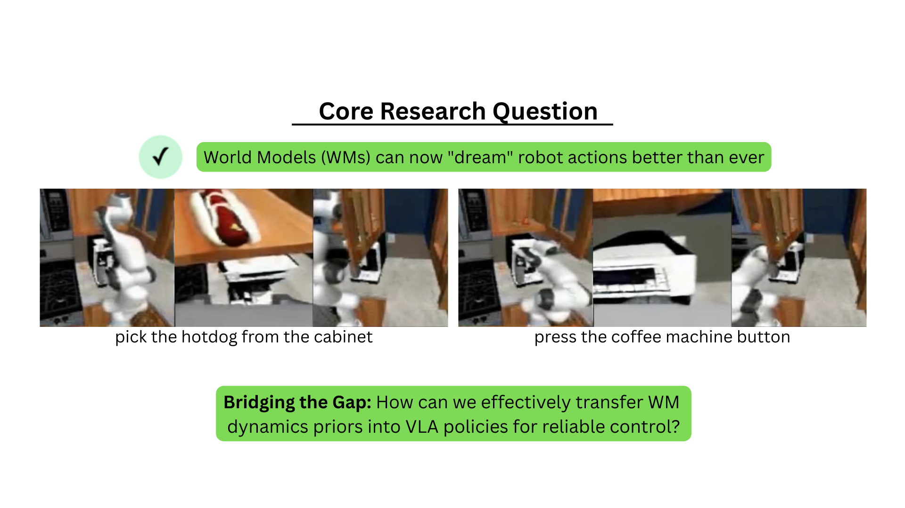
World models already capture meaningful robot dynamics
The initial framing highlights that modern world models can imagine tasks such as grasping from a cabinet or pressing a button.
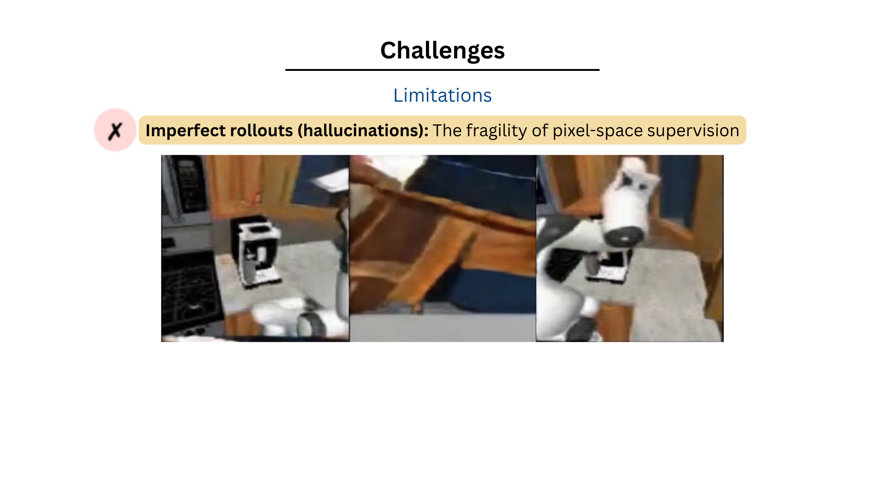
Current transfer pipelines still leave a gap
Existing approaches rely on pseudo-labeling, reward correction, or heavy joint modeling, which motivates direct latent-to-policy alignment.
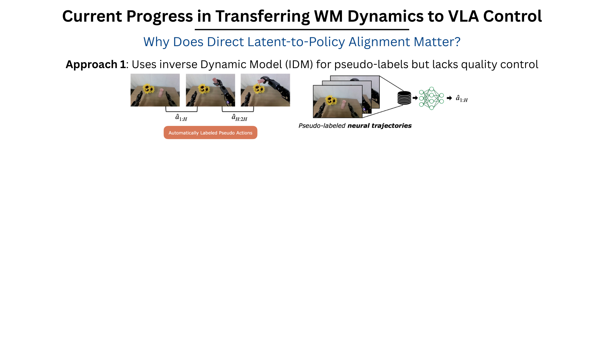
Approach 1: pseudo-actions from inverse dynamics
Pseudo-action labels help supervise imagined rollouts, but policy quality remains bounded by pseudo-label quality.
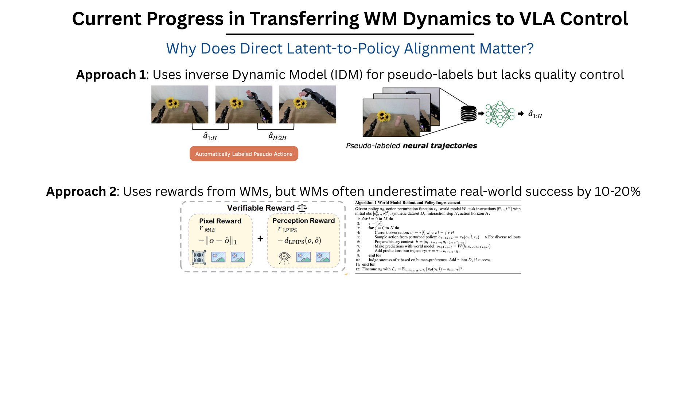
Approach 2: reward signals from imagined rollouts
Reward-based correction is useful, but world-model rewards can underestimate real-world success.
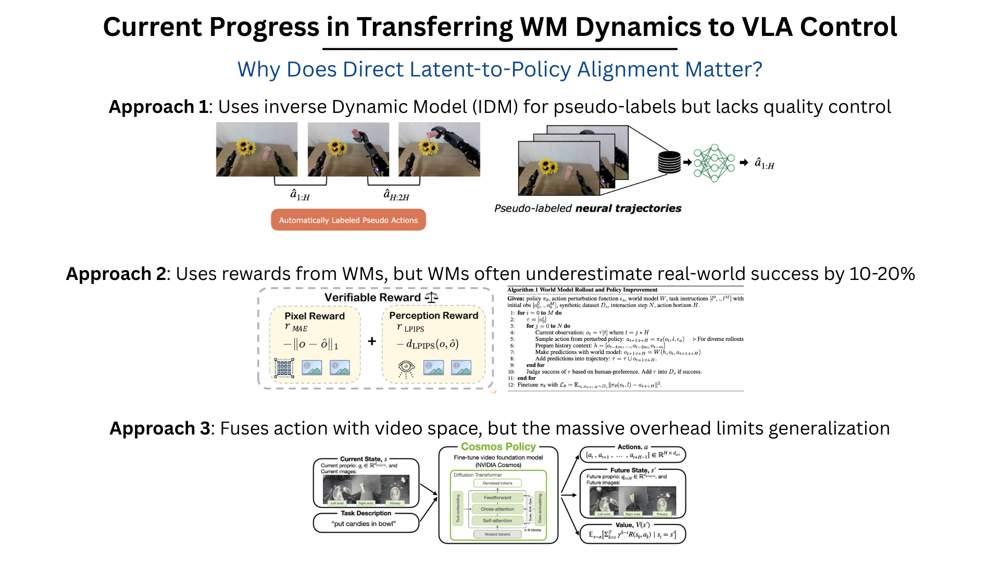
Approach 3: joint action-video modeling
Fusing action with video space reduces mismatch, but the overhead makes scaling and generalization harder.
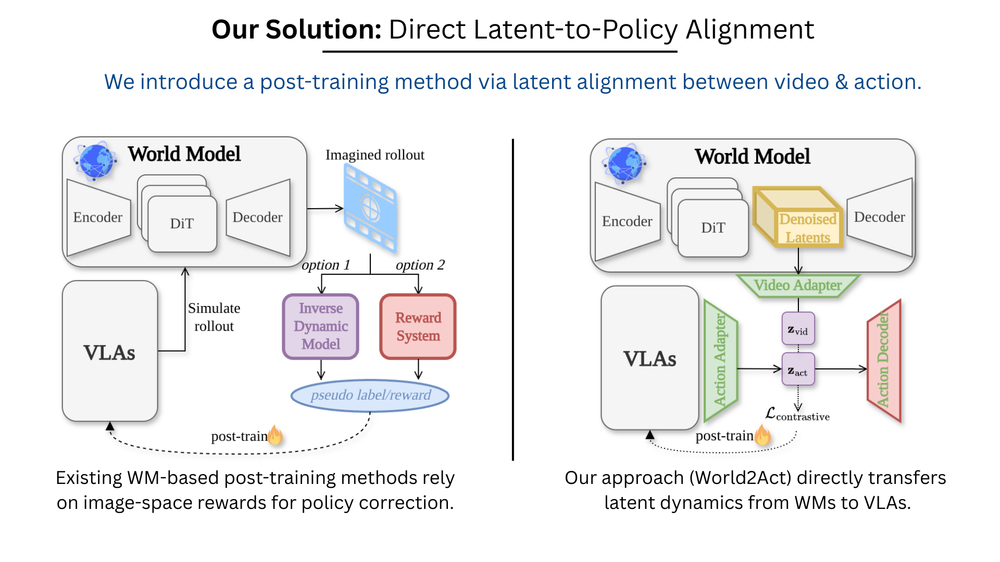
Pixel-space supervision alone is not enough
World2Act addresses this gap with latent alignment instead of depending on image-space correction alone.
Method
World2Act directly aligns world-model video latents with VLA action latents, then transfers those dynamics into a residual policy for post-training.
Direct latent-to-policy alignment
The core idea is to transfer world-model knowledge in latent space rather than by pseudo-actions or rendered rewards.
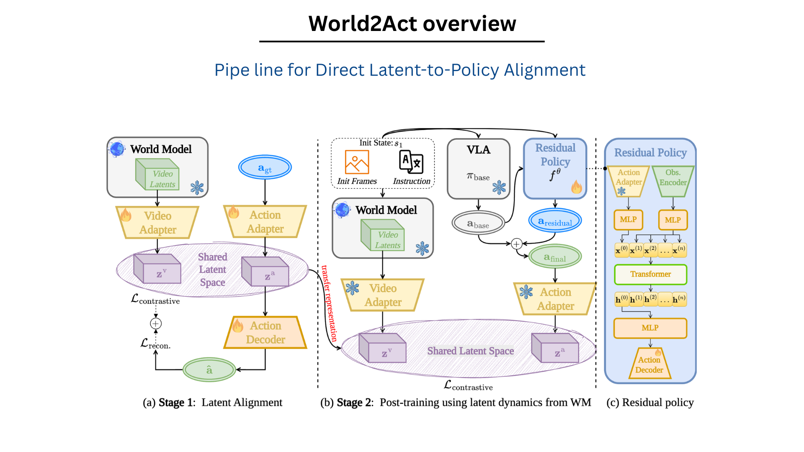
Two-stage training pipeline
Stage 1 aligns action and video latents; Stage 2 post-trains a residual policy using transferred world-model dynamics.
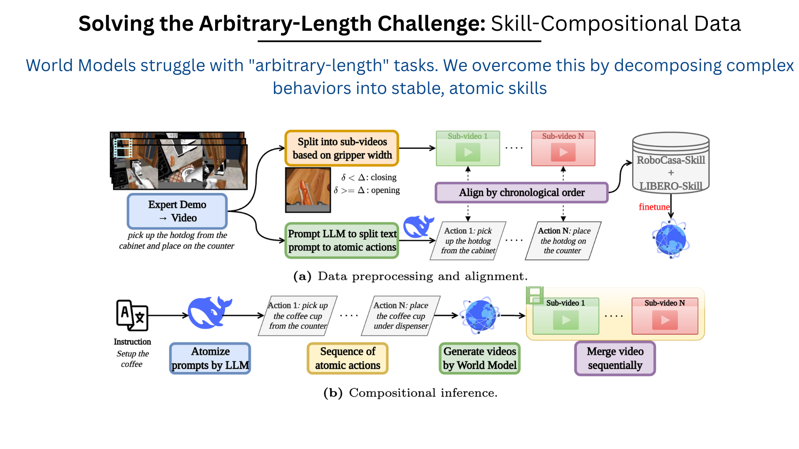
Skill-compositional data pipeline
Demonstrations are decomposed into aligned atomic skills and sub-videos for both training and compositional inference.
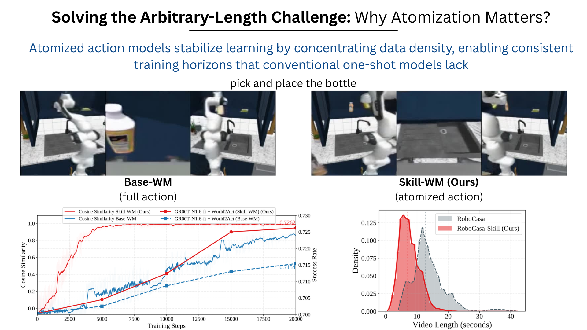
Why action atomization matters
Skill-level training stabilizes learning and concentrates the distribution around consistent horizons.
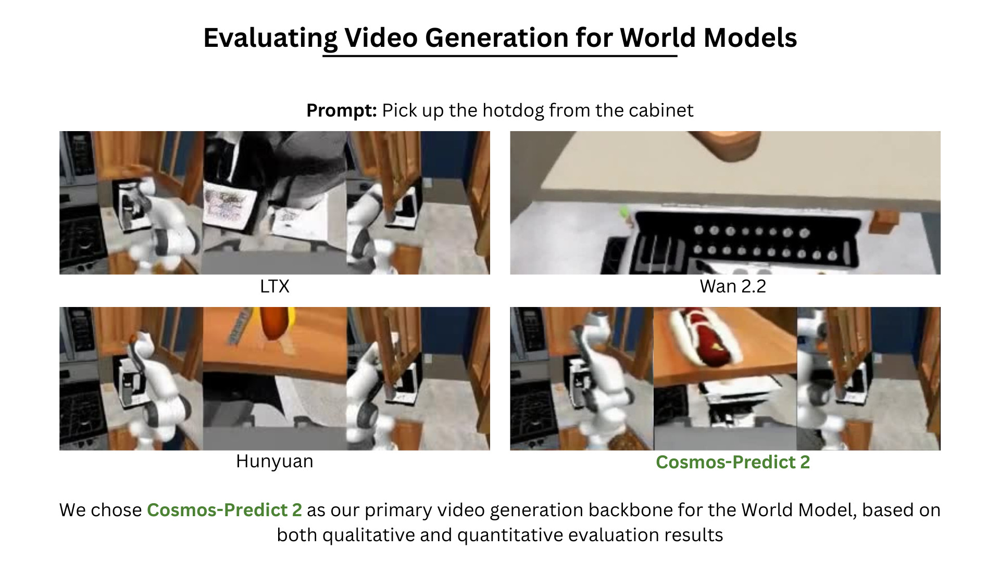
Backbone selection for the world model
Cosmos-Predict 2 is chosen as the primary video-generation backbone based on qualitative and quantitative evaluation.
Experimental Setups
World2Act is evaluated in simulation benchmarks as well as on a Franka Research 3 system equipped with a third-view camera.
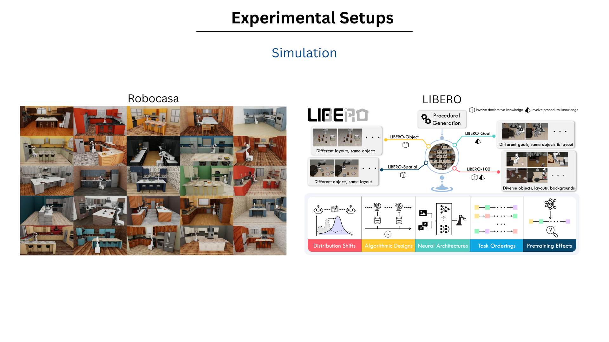
Simulation benchmarks
RoboCasa provides rich kitchen layouts, while LIBERO stresses transfer across spatial, object, goal, and long-horizon generalization.
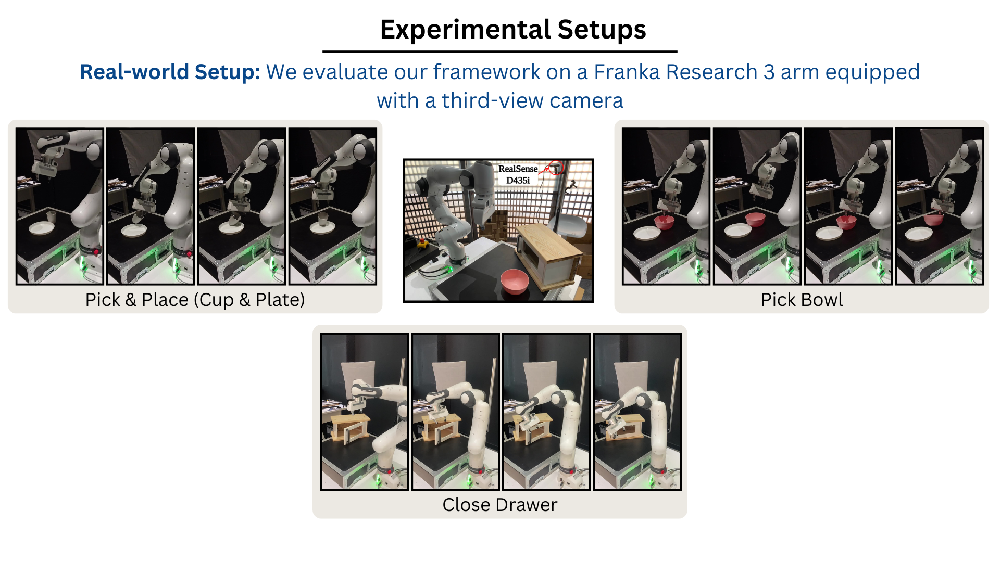
Real-world setup
The real robot evaluation covers pick-and-place, bowl pickup, and drawer closing under third-view perception.
Experimental Results
World2Act improves over strong world-model-based post-training baselines across RoboCasa, LIBERO, and real-world robot evaluation.
RoboCasa
Best success rate shown for GR00T-N1.6-ft + World2Act.
LIBERO
Top average score shown for Cosmos Policy + World2Act.
Real-world tasks
Pick & place, pick bowl, and close drawer.
Physical trials
Per-task evaluation in the real-world study.
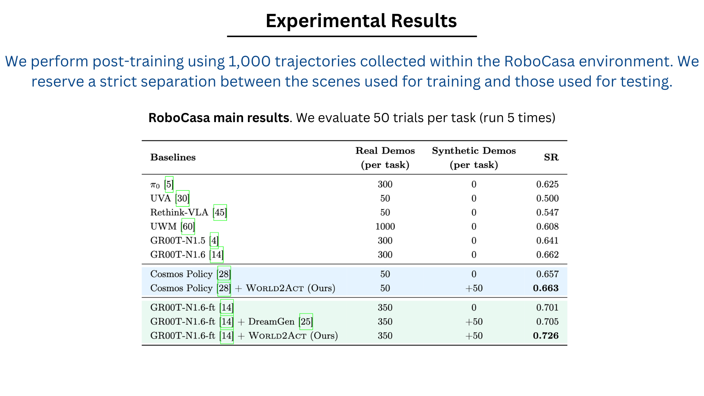
RoboCasa
World2Act improves both Cosmos Policy and GR00T-N1.6-ft based policies in the main RoboCasa table.
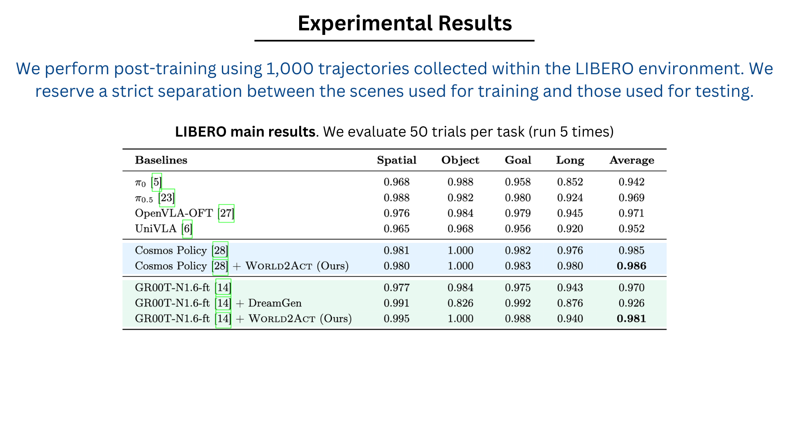
LIBERO
The LIBERO results show consistent gains from latent transfer across multiple generalization axes.
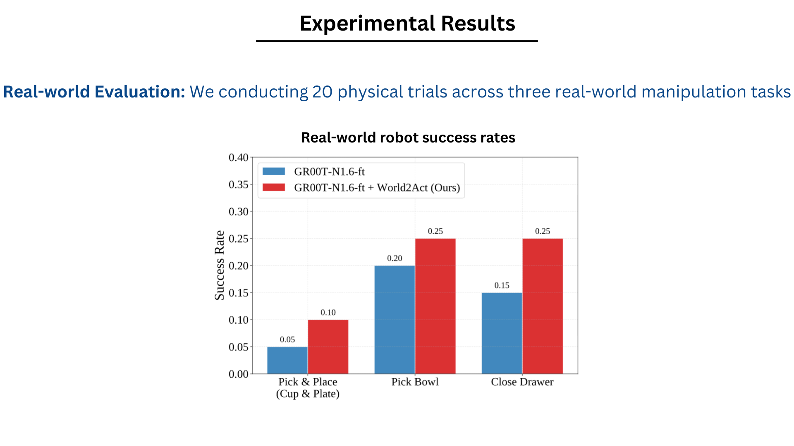
Real-world evaluation
The real-world study reports higher success across all three physical tasks after adding World2Act post-training.
Real-world gains
The real-world plot shows consistent improvements across all three tasks used in physical evaluation, confirming that the latent transfer also benefits execution outside simulation.
- Pick & place improves from 0.05 to 0.10.
- Pick bowl improves from 0.20 to 0.25.
- Close drawer improves from 0.15 to 0.25.
Qualitative Results
Skill-level imagination and real-world execution demonstrate how World2Act composes long-horizon behaviors from atomic skills.
Imagined rollout: bowl to plate
Skill-WM composes a multi-step bowl placement sequence from modular atomic skills.
Imagined rollout: cup to cabinet
Composable latent rollouts remain stable for longer-horizon rearrangement behavior.
Imagined rollout: close drawer
The skill prior also captures structured manipulation like drawer closing.
Imagination and execution
World2Act connects imagined skill rollouts with final execution on the physical robot.
Execution: cup to plate
The post-trained residual policy executes the transferred behavior on the real robot.
Execution: pick bowl
World2Act improves execution quality on the bowl pickup task.
Execution: close drawer
Drawer closing is another example where latent transfer leads to better physical behavior.
Summary
World2Act provides a scalable path for transferring world-model dynamics into VLA policies through direct latent alignment.
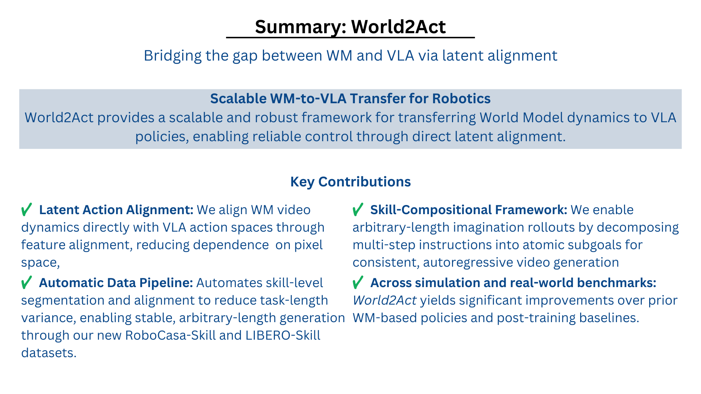
World2Act overview
The summary slide highlights latent action alignment, skill composition, and strong performance across simulation and real-world evaluation.
Key contributions
- Latent action alignment: direct transfer from world-model video dynamics into VLA action space.
- Skill-compositional data: atomic subgoals enable stable arbitrary-length imagination rollouts.
- Scalable post-training: a residual policy improves strong base VLAs without replacing them.
- Broad evaluation: gains hold across RoboCasa, LIBERO, and real-world robot tasks.